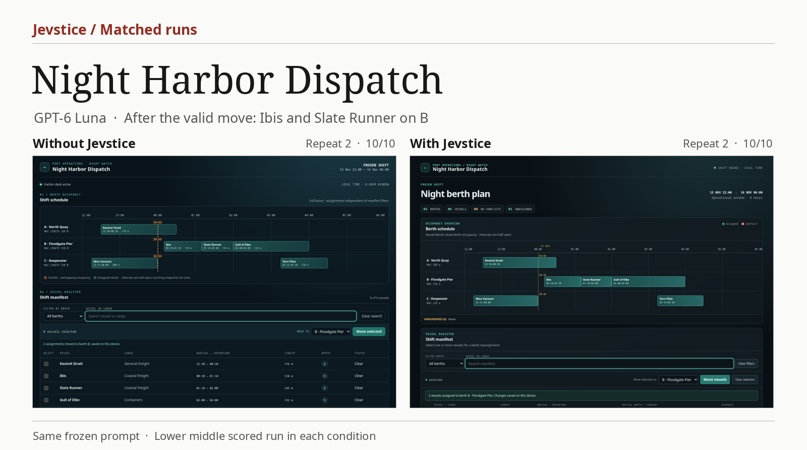
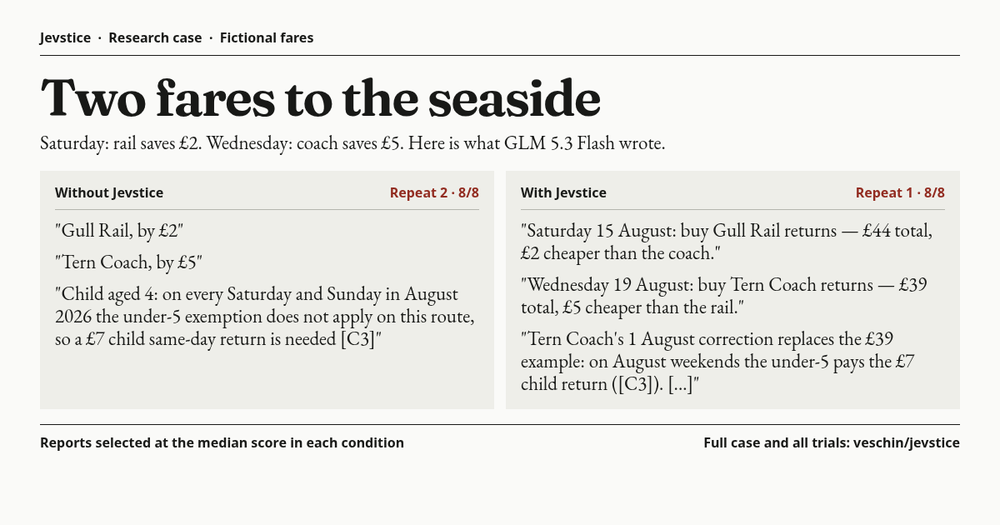

02 / Admin UI
The night shift.
Two vessels need a new berth. Can the dispatcher move both without double-booking the quay?

The comparison issue
Jevstice gives an oh-my-pi agent a second opinion. When does that change what the agent delivers?
Three models. Three briefs. Three repeats per condition.
Method & token ledger ↗
02 / Admin UI
Two vessels need a new berth. Can the dispatcher move both without double-booking the quay?

03 / Research
A family wants the cheaper return ticket. An old fare guide and a weekend correction give different answers.
